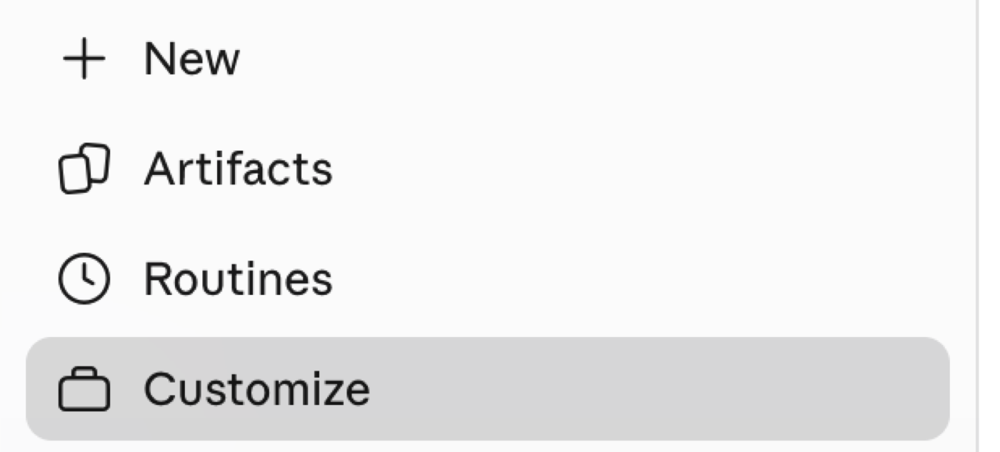
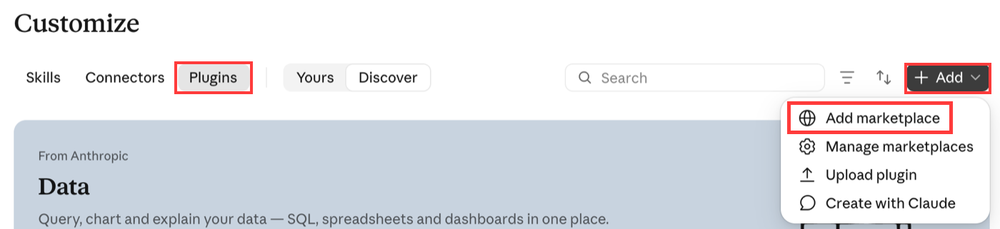
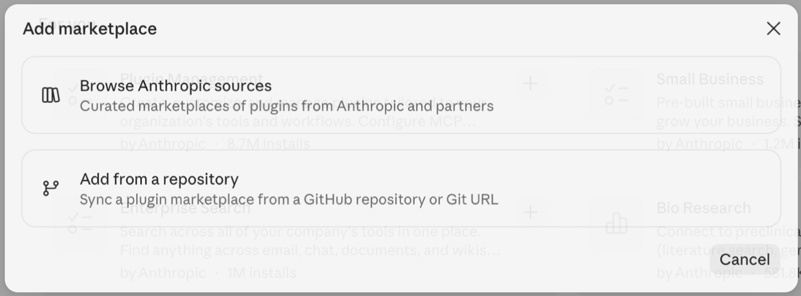
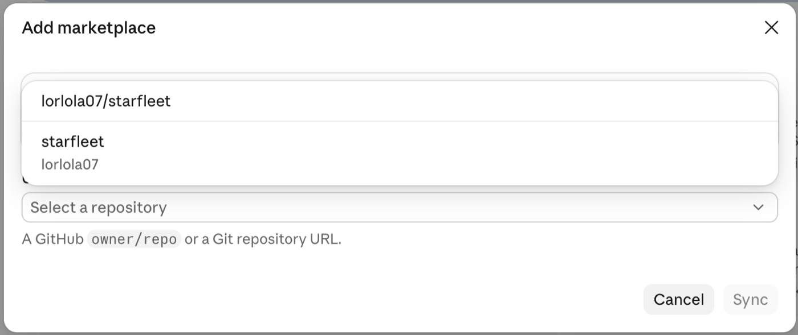
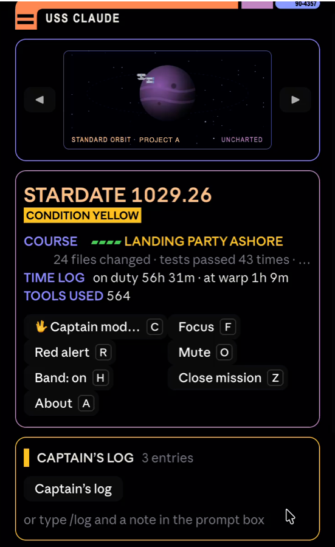

Starfleet turns Claude Code into a starship console: a crew member for each project, a captain's log that saves to your own private page, and a warp core that shows how full your chat is. Here's how to add it in the Claude desktop app.
In the Claude app's left sidebar, click Customize. It's right under New, Artifacts and Routines.

You'll know it worked when a Customize page opens with Skills, Connectors and Plugins across the top.
At the top of the Customize page, click the Plugins tab. Then press + Add in the top right corner of the page and choose Add marketplace from the menu that drops down. All three are boxed in red below.

An Add marketplace box opens in the middle of the screen. Choose Add from a repository, the second option in that box.

In the same box, click the URL field and type this. Pick starfleet from the list that drops down under the field, then press Sync in the bottom right corner of the box.
lorlola07/starfleet
Heads up: the box warns you to only add marketplaces you trust. That's a normal check for any marketplace outside Anthropic's own. Pressing Sync adds Starfleet for you.
Open Claude Code and type /starfleet in the message box at the bottom of the chat. The Starfleet console opens on the right side of the window.

In the Starfleet console on the right, press Set up my hub in the gold Captain's log block. Claude builds your hub for you.
You'll know it worked when Claude replies in the chat with a link to your hub. From then on, your notes save there on their own.
After you press a button in the console, scrolling can shiver in place. Press Esc on your keyboard and it stops right away.
We haven't cracked this one yet. If you like a good puzzle, the Known issues section of the README has what we've tried so far, and you can share an idea or a fix on GitHub.
Run this at the Claude Code prompt in your terminal, say yes to adding the marketplace, then pick a scope:
/plugin install starfleet --marketplace lorlola07/starfleet